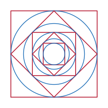
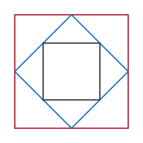

別冊章末問題の解答
1. 無限級数 \(\displaystyle\sum_{n=1}^{\infty}\dfrac{1}{n(n+3)}\) の和を求めよ。
部分分数に分ける
\[\dfrac{1}{n(n+3)}=\dfrac{1}{3}\left(\dfrac1n-\dfrac1{n+3}\right)\]部分和 \(S_n\) を求める
初項から第 \(n\) 項までの和は、途中の項が消えて
\[S_n=\dfrac{1}{3}\left\{\left(\dfrac11-\dfrac1{4}\right)+\left(\dfrac12-\dfrac1{5}\right)+\cdots+\left(\dfrac1n-\dfrac1{n+3}\right)\right\}\]\[S_n=\dfrac{1}{3}\left\{\dfrac1{1}+\dfrac1{2}+\dfrac1{3}-\dfrac1{n+1}+\dfrac1{n+2}+\dfrac1{n+3}\right\}\]\(n\to\infty\)
\(\dfrac1{n+j}\to0\)。
\[\sum_{n=1}^{\infty}\dfrac{1}{n(n+3)}=\lim_{n\to\infty}S_n=\dfrac{11}{18}\]（例題1の型）
【答案】
\[\dfrac{11}{18}\]答
2. 無限級数 \(\displaystyle\sum_{n=1}^{\infty}\left\{4\left(- \dfrac{1}{2}\right)^n+6\left(\dfrac{1}{5}\right)^n\right\}\) の和を求めよ。
収束を確認
公比 \(- \dfrac{1}{2}\)、\(\dfrac{1}{5}\) はどちらも絶対値が 1 より小さいので、2つの無限等比級数は収束する。
それぞれの和
\(\sum_{n=1}^\infty ar^{n}=\dfrac{ar}{1-r}\)（初項 \(ar\)、公比 \(r\)）。
\[\sum_{n=1}^{\infty}4\left(- \dfrac{1}{2}\right)^n=\dfrac{-2}{1-\left(- \dfrac{1}{2}\right)}=- \dfrac{4}{3}\]\[\sum_{n=1}^{\infty}6\left(\dfrac{1}{5}\right)^n=\dfrac{\dfrac{6}{5}}{1-\left(\dfrac{1}{5}\right)}=\dfrac{3}{2}\]たし合わせる
収束する2つの級数は項ごとにたしてよい。
\[- \dfrac{4}{3}+\left(\dfrac{3}{2}\right)=\dfrac{1}{6}\]（例題2の型）
【答案】
\[\dfrac{1}{6}\]答
3. 循環小数 \(2.\dot6\) を、無限等比級数の和を用いて分数で表せ。
無限級数で表す
循環する部分を、等比数列の和として書く。
\[2.\dot6=2+(0.6+0.06+\cdots)\]初項と公比
整数部分 \(2\) をのぞいた部分は、初項 \(\dfrac{3}{5}\)、公比 \(\dfrac{1}{10}\)。
和を求める
\[\dfrac{\dfrac{3}{5}}{1-\dfrac{1}{10}}=\dfrac{2}{3}\]\[2+\dfrac{2}{3}=\dfrac{8}{3}\]（例題3の型）
【答案】
\[\dfrac{8}{3}\]答
4. 無限級数 \(\displaystyle\sum_{n=1}^{\infty}\left(\dfrac{x}{x + 1}\right)^n\) が収束するような \(x\) の範囲を求め、そのときの和を \(x\) で表せ。
公比を読みとる
\(\sum_{n=1}^\infty \left(\dfrac{x}{x + 1}\right)^n\) は初項 \(\dfrac{x}{x + 1}\)、公比 \(\dfrac{x}{x + 1}\) の無限等比級数。
収束条件
\(|r|<1\) のとき収束する。
\[\left|\dfrac{x}{x + 1}\right|<1\]\[-1<\dfrac{x}{1+x}<1\]\[x>-\dfrac12\]和
収束するとき \(\dfrac{r}{1-r}\)。
\[S=\dfrac{\dfrac{x}{x + 1}}{1-\left(\dfrac{x}{x + 1}\right)}=x\]（例題4の型）
【答案】
\[x>-\dfrac12,\ \ S=x\]答
5. 1辺の長さが \(8\) の正方形に内接する円をかき、その円に内接する正方形をかき、さらにその正方形に内接する円をかく……という操作を限りなくくり返す。円の面積の総和と、正方形の面積の総和を求めよ。
面積の比を求める
1辺 \(8\) の正方形の内接円（半径 \(4\)）の内接正方形は、1辺が円の半径の \(\sqrt2\) 倍。
\[\text{次の正方形の1辺}=\dfrac{a}{\sqrt2}\ \Rightarrow\ \text{面積比 }\dfrac12\]円の面積の総和
第1の円：初項 \(\pi\left(\dfrac{8}{2}\right)^2=16 \pi\)、公比 \(\dfrac12\)。
\[\dfrac{16 \pi}{1-\frac12}=32 \pi\]正方形の面積の総和
初項 \(8^2=64\)、公比 \(\dfrac12\)。
\[\dfrac{64}{1-\frac12}=128\]
（例題5の型）
【答案】
\[\text{円 }32 \pi,\ \text{正方形 }128\]答
6. 無限級数 \(\displaystyle\sum_{k=1}^{\infty}\dfrac{1}{k(k+5)}\) の和を求めよ。
部分分数
\[\dfrac1{k(k+5)}=\dfrac1{5}\left(\dfrac1k-\dfrac1{k+5}\right)\]
部分和
\[S_n=\dfrac1{5}\left\{\left(1+\dfrac12+\cdots+\dfrac1{5}\right)-\left(\dfrac1{n+1}+\cdots+\dfrac1{n+5}\right)\right\}\]
極限
後ろの括弧は 0 に近づく。
\[\lim_{n\to\infty}S_n=\dfrac1{5}\left(\dfrac1{1}+\dfrac1{2}+\dfrac1{3}+\dfrac1{4}+\dfrac1{5}\right)=\dfrac{137}{300}\]（例題6の型）
【答案】
\[\dfrac{137}{300}\]答
7. 無限級数 \(\displaystyle\sum_{k=1}^{\infty}k\left(- \dfrac{1}{3}\right)^{k-1}\) の和を求めよ。
部分和
\(S_n=\sum_{k=1}^{n}k\,r^{k-1}\)、\(rS_n\) を引く。
\[(1-r)S_n=1+r+\cdots+r^{n-1}-nr^n=\dfrac{1-r^n}{1-r}-nr^n\]極限
\(|r|<1\) のとき \(r^n\to0,\ nr^n\to0\)。
\[(1-r)S=\dfrac1{1-r}\ \Rightarrow\ S=\dfrac1{(1-r)^2}\]値
\(r=- \dfrac{1}{3}\)：
\[S=\dfrac1{\left(1+ \dfrac{1}{3}\right)^2}=\dfrac{9}{16}\]（例題7の型）
【答案】
\[\dfrac{9}{16}\]答
8. 1辺 \(12\) の正方形がある。各辺の中点を結んで正方形を作り、さらにその正方形の各辺の中点を結ぶ操作を限りなくくり返す。できる正方形（もとのものを含む）の面積の総和を求めよ。
面積の列
各辺の中点を結んで作る正方形の面積は、元の \(\dfrac12\) 倍。
\[S_1=144,\quad S_2=72,\quad S_3=36,\ \ldots\]
初項と公比
初項 \(144\)、公比 \(\dfrac12\)。
総和
\[\dfrac{144}{1-\dfrac12}=288\]
（例題8の型）
【答案】
\[288\]答
9. 無限級数 \(\displaystyle\sum_{n=1}^{\infty}(x^2-7x)^n\) が収束するような \(x\) の値の範囲を求めよ。
収束条件
公比 \(r=x^2-7x\) の無限等比級数が収束 \(\iff |r|<1\)。
\[-1<x^2-7x<1\]2つの不等式
\[x^2-7x-1<0\ \Rightarrow\ \dfrac{7-\sqrt{53}}{2}<x<\dfrac{7+\sqrt{53}}{2}\]
\[x^2-7x+1>0\ \Rightarrow\ x<\dfrac{7-\sqrt{45}}{2}\ \text{または}\ x>\dfrac{7+\sqrt{45}}{2}\]
共通部分
数直線で重ねて答えを出す。
（例題9の型）
【答案】
\[\dfrac{7-\sqrt{53}}{2}<x<\dfrac{7-\sqrt{45}}{2},\ \ \dfrac{7+\sqrt{45}}{2}<x<\dfrac{7+\sqrt{53}}{2}\]答
10. 無限級数 \(\displaystyle\sum_{k=1}^{\infty}\left(\sqrt{k+5}-\sqrt{k}\right)\) は収束するか。収束するならその和を求めよ。
部分和
\(S_n=\sum_{k=1}^{n}\left(\sqrt{k+5}-\sqrt{k}\right)\)。
有理化
\[\sqrt{k+5}-\sqrt k=\dfrac{5}{\sqrt{k+5}+\sqrt k}\]
発散
\(\dfrac{5}{\sqrt{k+5}+\sqrt k}>\dfrac{5}{2\sqrt{k+5}}\) などで評価でき、部分和は無限大に発散する。または\[\sqrt{k+5}-\sqrt k=\dfrac{5}{\sqrt{k+5}+\sqrt k}\to0\ \text{だが、和は発散}\]
（例題10の型）
【答案】
\[\text{発散する}\]答